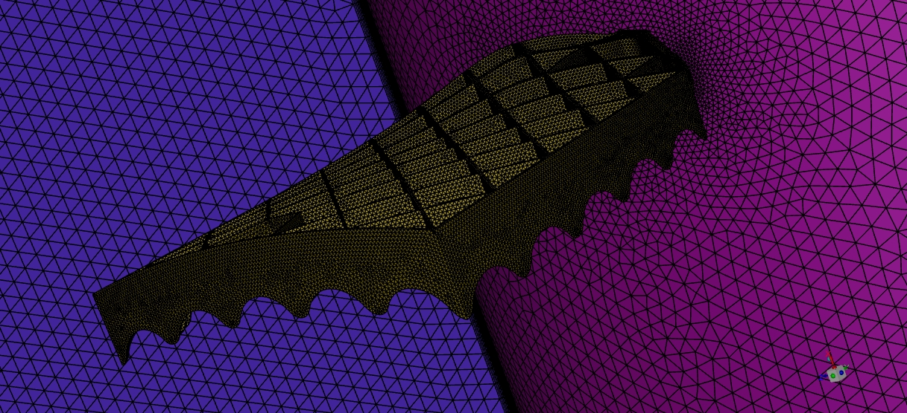
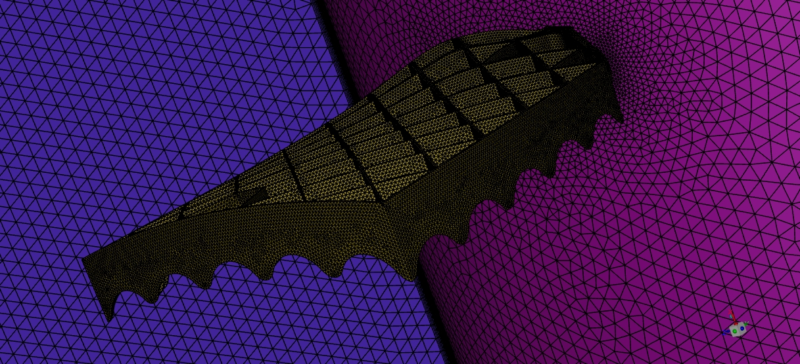

About Me
I am a highly motivated aerospace engineering master's student with a strong focus on computational fluid dynamics (CFD) in high-speed aerodynamics and reentry vehicle analysis. My expertise includes numerical simulations of hypersonic flows, turbulence modeling, and aerothermal effects, with a particular emphasis on shape parameter optimization for reentry configurations. My research and academic projects have provided me with deep insights into aerothermodynamics, mesh sensitivity analysis, and shock-wave interactions in hypersonic regimes.
In my role as a Junior Aeromechanic Engineer at the Warsaw Institute of Aviation (EDC), I have gained hands-on experience in running aeromechanical analyses using ANSYS and GageMap, processing and interpreting large datasets from experimental campaigns, and preparing certification documentation. Working in an international team, I have developed strong collaboration and communication skills, ensuring high-precision results while effectively coordinating with engineers from diverse backgrounds.
As a member of the Students' Space Association - Rocketry Division, I contributed to the aerodynamic analysis of key rocket components, including the split canards of the FOK Rocket and the nose cone and fins of the GROT Rocket. This experience has sharpened my ability to optimize aerodynamic performance, troubleshoot complex simulations, and work under tight deadlines within a dynamic, team-driven environment.
My academic journey has also included practical research projects, such as my Bachelor's thesis on the aerodynamic performance of Falcon 9 grid fins across all Mach regimes. I performed detailed CFD analyses, mesh convergence studies, and post-processing in ANSYS Fluent, which deepened my expertise in high-fidelity aerodynamic simulations.
Beyond technical skills, I bring a proactive and problem-solving mindset, excellent adaptability, and a strong ability to work in interdisciplinary teams. My international project collaborations have strengthened my ability to communicate complex engineering concepts effectively. Additionally, I am highly organized, detail-oriented, and thrive in high-pressure environments that require both analytical and creative problem-solving skills.
Passionate about advancing aerospace technology, I am eager to contribute to innovative projects in spacecraft design, reusability, and aerothermodynamic optimization. Whether working independently or in a team, I am committed to continuous learning and pushing the boundaries of aerospace engineering.
project 1
Details about project 1.


project 2
Details about project 2.


project 3
Details about project 3.


project 4
Details about project 4.


project 4 (Hobby)
Details about hobby project 4.


project 5
Details about hobby project 5.


project 6
Details about hobby project 6.


project 7
Details about hobby project 7.


Bachelor Thesis: Falcon 9 Grid Fin Aerodynamics
My Bachelor thesis, titled "Aerodynamic Performance Analysis of Falcon 9 Grid Fins: A Computational Investigation", was a deep-dive CFD study into the aerodynamics of reusable rocketry. I analyzed the flow behavior around SpaceX’s Falcon 9 titanium grid fins across subsonic, transonic, and supersonic regimes, using ANSYS Fluent and the SST k-ω turbulence model.
I developed high-fidelity 2D and 3D CFD models of the grid fin mounted on the booster stage, executed mesh sensitivity studies, and extracted aerodynamic coefficients (drag, lift, moment) across multiple Mach numbers. Realistic conditions were modeled based on actual Falcon 9 reentry altitudes and speeds, and the simulations revealed valuable insights about shockwave interaction, flow separation, and boundary layer behavior.
While the simulations were limited to Mach 1.91 due to hardware constraints, I ensured full convergence and physical accuracy through optimized meshing, inflation layers, and adaptive solver control. The final results showed how the back-swept design of SpaceX's titanium fins significantly improves supersonic performance and delays wave drag onset—a key factor for reentry control.
üöÄ Lessons Learned
- Mastering mesh quality: By tuning inflation layers for a y⁺ around 1, I learned firsthand how a well‑constructed mesh can dramatically improve shock capturing and solution stability in supersonic flows.
- Modeling high‑speed air: Setting up correct boundary conditions and gas properties for Mach >1 taught me the nuances of real‑gas effects and how to predict bow‑shock angles with confidence.
- Bow‑shock familiarity: Watching shock waves wrap around grid fins showed me the practical side of oblique‐shock theory—and inspired me to explore control‑surface interactions in highly sonic conditions.
- Deepening CFD theory: Building everything solo—from geometry cleanup to solver setup—gave me a solid grasp of turbulence models (SST k‑ω), convergence criteria, and when to trust residuals versus physical trends.
- Independent problem‑solving: Tackling mesh refinement, solver crashes, and post‑processing challenges alone honed my resilience—and taught me to document each step so future peers (or employers) can pick up where I left off.
- Communicating complexity: Presenting my results to faculty members sharpened my ability to translate dense CFD data into clear, actionable insights—an essential skill for any collaborative engineering environment.
 



Intermediate Project 2
Details about Intermediate Project 2.


Masters Thesis
Details about Masters Thesis.
Additional Project
Details about Additional Project.


DSMC
Details about DSMC project.


CFD-DSMC
Details about Hybrid CFD-DSMC workflow.


Kinetic Boltzmann
Details about Kinetic Boltzmann solver project.


ML Add-ons
Details about ML-based enhancements.